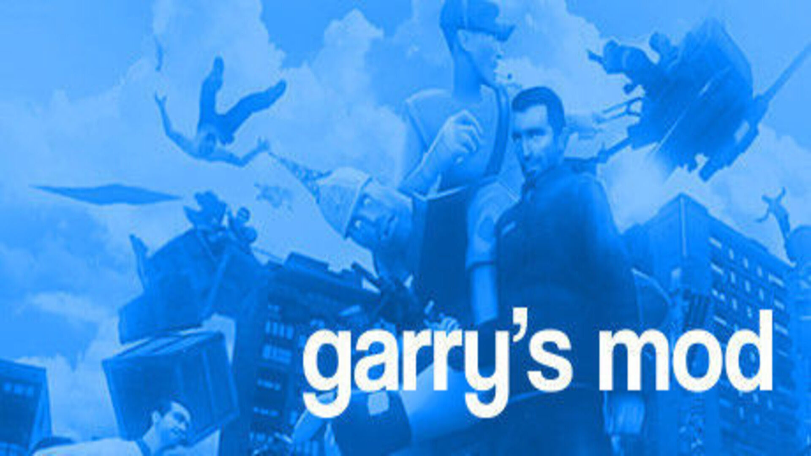

Inicio
Listado
Detalles
Contactos/Redes
Videojuegos

Garry's Mod
Garry's Mod o mejor conocido como GMod, es un videojuego sandbox desarrollado por Facepunch Studios y publicado por Valve que permite al usuario manipular objetos y experimentar con la física con su mítica arma "Physics Gun".
Mas Info

DBZ Dokkan Battle
Dragon Ball Z: Dokkan Battle es un juego para dispositivos móviles basado en la franquicia de anime Dragon Ball. Fue lanzado en Japón el 30 de enero de 2015 para Android y 19 de febrero de 2015 para iOS, y más tarde fue lanzado globalmente el 17 de julio de 2015.
Mas Info

DBZ Dokkan Battle
Dragon Ball Z: Dokkan Battle es un juego para dispositivos móviles basado en la franquicia de anime Dragon Ball. Fue lanzado en Japón el 30 de enero de 2015 para Android y 19 de febrero de 2015 para iOS, y más tarde fue lanzado globalmente el 17 de julio de 2015.
Mas Info